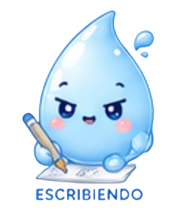
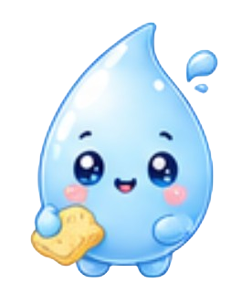
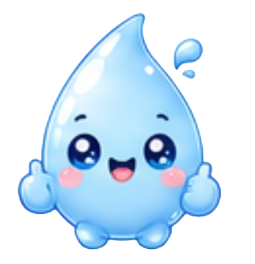

Dispositivo IoT portatil que mide pH y TDS del agua al instante, con alertas visuales y dashboard web. Para comunidades, municipalidades y empresas mineras.

Las comunidades rurales y periurbanas de Arequipa no tienen acceso a herramientas accesibles para saber si el agua que consumen es apta, especialmente en zonas afectadas por actividad minera.

Los metodos tradicionales de analisis son costosos, lentos y no estan al alcance de comunidades rurales.
La actividad minera en Arequipa impacta directamente en la calidad del agua de comunidades cercanas.
Consumir agua no verificada genera enfermedades y carga al sistema de salud local.
Los gobiernos locales no cuentan con monitoreo en tiempo real para tomar decisiones de saneamiento.
AquaScan integra sensores electroquimicos de pH y TDS con Arduino UNO, pantalla LCD, alertas LED y un dashboard web accesible desde cualquier dispositivo.
Electrodo + modulo de medicion electroquimica de alta precision para detectar niveles de acidez y alcalinidad en tiempo real.
Medicion de solidos disueltos totales en partes por millon. Detecta contaminantes invisibles al ojo humano.
Resultados inmediatos con modulo I2C integrado.
Verde = apto. Rojo = contaminacion detectada.
Servidor Node-RED + MQTT + MariaDB. Monitorea desde cualquier dispositivo con conexion a internet, en cualquier lugar del mundo.
Carcasa MDF estructurada, ensamblaje profesional.
Mantenimiento mensual incluido en el plan.
Microcontrolador confiable, de facil mantenimiento y con una comunidad global de soporte tecnico para actualizaciones futuras.
AquaScan opera en un modelo B2B + social, atendiendo a organizaciones que necesitan datos confiables del agua para tomar decisiones.
Zonas con acceso limitado a agua segura, juntas vecinales, comites de agua y familias preocupadas por la salud.
Necesidad: saber si el agua es aptaGobiernos locales y areas de saneamiento que necesitan monitorear y prevenir riesgos sanitarios en tiempo real.
Necesidad: monitorear riesgos sanitariosOperaciones con impacto hidrico que necesitan cumplir normativas ambientales y demostrar responsabilidad social.
Necesidad: cumplir normativas RSE145 encuestas aplicadas. 84% de intencion de compra positiva. El punto de equilibrio se alcanza en el mes 3 de operaciones.
Inversion total de S/. 17,215 (35% financiado por banco). Recuperacion de inversion proyectada en el mes 9.
| Concepto | Ano 1 | Ano 2 | Ano 3 | Ano 4 | Ano 5 |
|---|---|---|---|---|---|
| Demanda (unidades/ano) | 283 | 325 | 374 | 430 | 494 |
| Ingresos totales (S/.) | 205,255 | 288,870 | 417,122 | 564,468 | 733,634 |
| Egresos totales (S/.) | 168,820 | 191,944 | 213,430 | 237,641 | 264,951 |
| Flujo neto (S/.) | 36,435 | 96,926 | 203,692 | 326,827 | 468,684 |
Crecimiento de demanda 15% anual. Costos fijos crecen 5%/ano (inflacion). CVU constante por economias de escala.
AquaScan trabaja junto a organizaciones comprometidas con el desarrollo tecnologico y social para ampliar su alcance e impacto en comunidades vulnerables.
Organizacion enfocada en el uso de datos para el bienestar social. Potencia el analisis de datos recolectados por el dispositivo, generando reportes que facilitan la toma de decisiones.
Datos · Analisis · Impacto socialRed global que impulsa el emprendimiento y la educacion financiera en jovenes. Fortalece las capacidades empresariales de AquaScan y conecta con redes de mentores.
Emprendimiento · Mentoria · JovenesCada canal tiene un objetivo claro dentro del embudo de marketing.
Contenido visual y educativo sobre problemas reales de contaminacion del agua.
Visitar Instagram →Videos educativos cortos sobre calidad del agua y demostraciones del dispositivo en vivo.
Visitar TikTok →Escribenos a aquascan13@gmail.com para consultas, cotizaciones o solicitar una prueba piloto.
Contactar →
Completa el formulario y nos ponemos en contacto para coordinar una demostracion o prueba piloto gratuita.
Tambien puedes escribirnos en Instagram o TikTok · @AQUASCAN1